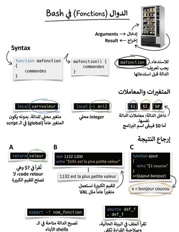

Fonctions
الدوال
الشرح بالعربية
التعريف: function nom { ... } أو nom() { ... }. تُستدعى كأمر بدون (). تعمل في نفس الشيل فتتشارك المتغيرات. الوسائط $1.. و$#. return يرجع كودًا من 0 إلى 255 فقط؛ لإرجاع قيمة استخدم echo ثم $(). local لمتغير محلي. declare -F يعرض الدوال، unset -f يحذفها، export -f يورّثها، وsource يحمّلها من ملف.
Illustrations de la leçon
1 planche · cliquez pour agrandir
Contenu de la leçon
Le cours en français, avec les termes techniques et les exemples.
Le shell bash propose plusieurs syntaxes pour définir une fonction:
function nom_fct
{ suite_de_commandes
} nom_fct () { commande...
} function nom_fct
{ suite_de_commandes ;}
Pour appeler une fonction, il suffit de mentionner son nom.
LES FONCTIONS
Comme pour les autres commandes composées de bash, une fonction peut être définie directement à partir d’un shell interactif.
$ function f0{
> echo Bonjour tout le monde !
> }
$ f0 => appel de la fonction f0Bonjour tout le monde !
$
DÉFINITION DE FONCTION EN MODE LIGNE
L'exécution d'une fonction s'effectue dans l'environnement courant, autorisant ainsi le partage de variables.
En mode commande :
$ c=Coucou$
$ function f1{
echo $c=> utilisation dans la fonction d’une variable externe c
}
$
$ f1Coucou
$
L’EXÉCUTION D’UNE FONCTION
Il n’est pas obligatoire de définir toutes les fonctions en début de programme. Il est uniquement nécessaire que la définition d’une fonction soit faite avant son
appel effectif, c'est-à-dire avant son exécution :
function f1
{ ... ;} suite_commandes1 function f2
{ ... ;} suite_commandes2
Dans le code ci-dessus, suite_commandes1 ne peut exécuter la fonction f2
(contrairement à suite_commandes2).
Pour utiliser les fonctions dans tout le script il suffit de les déclarer au début.
OÙ DÉFINIR UNE FONCTION
Les noms de toutes les fonctions définies peuvent être listés à l'aide
de la commande :
declare –F#exemple de réponse
declare -f f0declare -f f1Les noms et corps de toutes les fonctions définies sont affichés
à l’aide de la commande :
declare –fPour afficher le nom et corps d’une ou plusieurs fonctions :
declare -f nomfct ...
declare -f f0DECLARE -F
Une fonction est rendue indéfinie par la commande interne :
unset -f nomfct ...
$ declare -F declare -f f0 declare -f f1$ unset -f f1$ declare –Fdeclare -f f0=> la fonction f1 n’existe plus !
SUPPRESSION D’UNE FONCTION
Les arguments d’une fonction sont référencés dans son corps de la
même manière que les arguments d’un programme shell le sont :
$1 référence le premier argument, $2 le deuxième, etc., $# lenombre d’arguments passés lors de l’appel de la fonction.
Le paramètre spécial $0 n’est pas modifié : il contient le nom du programme shell.
Ecrire un script qui affiche $0, $1 et $# avant la définition de la fonction, dans la fonction et après.
LES ARGUMENTS PASSÉS AU SCRIPT
script.sh :
#!/bin/bashecho "Avant f : \$0 : $0"
echo " Avant f : \$# : $#"
echo " Avant f : \$1 : $1"
function farg
{
echo " --- dans f : \$0 : $0"echo " --- dans f : \$# : $#"echo " --- dans f : \$1 : $1" ; }# Appel de la fonction farg echo " Aprés f : \$0 : $0"
echo " Aprés f : \$# : $#"
echo " Aprés f : \$1 : $1"
LES ARGUMENTS PASSÉS AU SCRIPT
Par défaut, une variable définie à l’intérieur d’une fonction est globale ; cela signifie qu’elle est directement modifiable par les autres fonctions du programme shell.
Exemple : glob.sh
#!/bin/bashfunction fun
{ var="Un"
# creation de la variable var
} function fdeux
{ var=${var}Deux
# premiere modification de var
} fun fdeux var=${var}Princ
# deuxieme modification de va
echo $varUnDeuxPrinc
#résultat
LES VARIABLES GLOBALES
Pour définir une variable locale à une fonction, on utilise la
commande interne local. Sa syntaxe est :
local [option] [nom[=valeur] ...] local prenom="zouhair"
Les options utilisables avec local sont celles de la commande interne declare. Par conséquent, on définira une ou plusieurs variables de type entier avec la syntaxe local –i (local –a pour un tableau local).
La portée d'une variable locale inclut la fonction qui l'a définie ainsi que les fonctions qu'elle appelle (directement ou indirectement).
LES VARIABLES LOCALES
Exemple :
#!/bin/bashfunction f1 { local -i a=12
# 'a' est une variable locale à f1
(( a+=1 ))
echo "Dans f1 : a => $a"} f1
echo "Dans main : a => $a" # Génère une erreur car 'a' est locale à f1LES VARIABLES LOCALES
On peut définir une fonction qui retourne une valeur comme le montre l’exemple
(min entre args):
function min()
{ if [ -n $1 ] && [ -n $2 ]; then if [ $1 -lt $2 ]; then return $1 else return $2 fi fi
} min 112 13 echo "$? est la plus petite valeur"
LE RETURN
Il n’est pas possible de mettre une valeur supérieure à 256 comme argument et une fonction ne peut renvoyer une valeur supérieure à 256.
Cette contrainte provient des codes de sortie.
Pour palier au problème, il suffit d'utiliser une variable globale.
VAL=
function min() { if [ -n "$1" ] && [ -n "$2" ]; then if [ "$1" -lt "$2" ]; then
VAL=$1
else
VAL=$2
fi fi
} min 1132 1300 echo "$VAL est la plus petite valeur"
RESTRICTION DU RETURN
Pour qu’une fonction puisse être exécutée par un programme shell différent de celui où elle a été définie, il est nécessaire d’exporter cette fonction.
On utilise la commande interne export: export -f nomfct
Pour que l’export fonctionne, le sous-shell qui exécute la fonction doit avoir une relation de descendance avec le programme shell qui exporte la fonction.
EXPORTER UNE FONCTION
Exemple :
Progdef.sh
#!/bin/bashfunction bonj
{ echo "bonj : Bonjour $1 "
} bonj Madame
#appel normal à la fonction
ProgShell.sh
#!/bin/bashecho "appel a la fonction externe : bonj "
bonj Monsieur
#appel erroné à la fonction
EXPORTER UNE FONCTION
Le programme devient:
#!/bin/bashfunction bonj
{ echo bonj : Bonjour $1
}
export -f bonjVISIBILITÉ D’UNE FONCTION
Après son export, la fonction bonj sera connue dans les sousshells créés lors de l’exécution de ProgShell.
La visibilité d’une fonction exportée est similaire à celle d’une variable locale, c'est-à-dire une visibilité arborescente dont la racine est le point d’export de la fonction.
VISIBILITÉ D’UNE FONCTION
La commande interne return ne peut retourner qu’un code de retour.
Pour récupérer la valeur modifiée par une fonction, on peut :
Enregistrer la nouvelle valeur dans une variable globale,
Faire écrire la valeur modifiée sur la sortie standard, ce qui permet à la fonction ou programme appelant de capter cette
valeur grâce à une substitution de fonction :
$( fct [ arg … ] )SUBSTITUTION D’UNE FONCTION
Exemple:
#!/bin/bashfunction ajout
{ echo " $1 coucou "
} echo "la chaine est : $(ajout bonjour)"